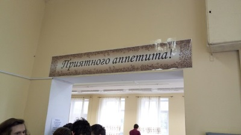
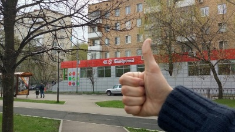
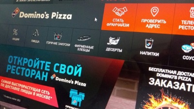
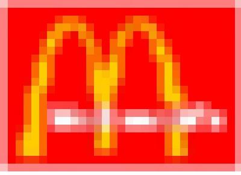

Что же кушать?
Еда - один из важнейших вопросов истощавших сунцов. Ведь, чтобы каждый день решать десятки задач и после пар не заниматься созерцанием снов, нужен нехилый запас энергии. А из уроков биологии мы знаем, что энергию человек получает из пищи. Так вот, в этом разделе я рассмотрю основные источники пищи для голодного сунца.
Столовая
Столовая в СУНЦе состоит из двух залов: малого и большого. В малом питаются ученики 10х классов, а в большом, соответственно, ученики 11х. Конечно, обслуживает каждый сам себя. Для этого и существуют подносы, главное, не забывайте относить их назад на раздачу, иначе кому-то может не хватить. Оба зала оборудованны удобными столами разной длины, как для большой компании, так и для камерных посиделок. В целом, столовка - довольно приятное место.
Столовка остается основным местом питания сунцов. Плюсы на лицо: бесплатно(кроме оплаты за обучение, конечно), близко, атмосферно. К тому же, обладая небольшой ловкостью и беспалевностью, можно почти неограничено брать порции. А на ужине особо общительные ребята любят посидеть за стаканом чая и поболтать за жизнь, что определенно плюс в пользу столовки.
Но все-таки минусы родной столовой на данный момент чувствуются гораздо сильнее. Основной проблемой является качество питания. Распределение вероятности вкусной еды в СУНЦе довольно неоднородно. Порой приготовленные блюда нельзя назвать иначе, как пищей богов. Но чаще, к сожалению, они сравниваются с весьма неприятными субстанциями. Тем не менее, меню всегда можно посмотреть в большом зале и сразу определиться, на что ходить, а что можно и пропустить. К минусам столовки также относятся огромные очереди, но эта проблема легко решается умелыми действиями дежурных.
Дежурные - это очень важные люди из дежурного класса. Они приходят самые первые, чтобы расставить хлеб, и уходят самые последнии, проверив, что все чисто и аккуратно. Основной функцией дежурных является регулировка очереди. Очередь состоит из двух частей: мальчики и девочки. Именно дежурный решает сколько человек пройдет к заветной пище. Поэтому от его действий зависит размер очереди, а также настроение стоящих в ней сунцов. При огромной очереди и неумелом дежурном парни могут рассвирепеть и вытолкнуть голову очереди в зал. Но не смотря ни на что, в очереди необходимо соблюдать спокойствие и терпимость. А также не нужно лезть без очереди, это не приветствуется, а особо эмоциональные люди могут открыто вступить с нарушителем в конфликт.
В целом, столовка - весьма неплохое место. К тому же, в последнее время она только улучшается. И если денег имеется не много, то она может стать вполне годным источником пропитания на период обучения в СУНЦе.
Магазины
Вокруг СУНЦа расположенно немало магазинов, в которых можно неплохо закупиться едой и прожить два-три дня, не питаясь в столовой. К плюсам этого способа пропитания безусловно относятся возможность выбора меню, качество товаров и сладкое, которое в столовой бывает редко и в малых количествах. В пределах 10 минут ходьбы от сунца находятся магазины пяти торговых сетей и множество маленьких продуктовых, поэтому выбор продуктов просто огромен. К тому же, каждый может взять еды, учитывая свой бюджет, так как ценовой диапазон довольно большой.
Пятерочка
Из минусов можно назвать лишь большие очереди и очень медлительных кассиров. Но, закаленному в очередях в столовку сунцу это покажется небольшой помехой.
Дикси
Магнит
Перекресток
Дары природы
Ашан
Еда на заказ
С этим у сунцов тоже нет проблем. Нужно лишь назвать адрес: Кременчугская, 11. А потом встретить курьера на КП. Конечно, это дороже, чем еда из магазина, но иногда побаловать себя можно. Особенно собрав большую компанию. Не смотря на кажущуюся простоту, некоторые проблемы все-таки могут возникнуть. Чтобы их избежать нужно лишь не показывать вашу пиццу или что-нибудь еще сотрудникам воспитательного отдела. Но даже если это произойдет, то воспитетль ограничится устным предупреждением или, в крайнем случае, заставит писать объяснительную.
Фастфуд
Для любителей фастфуда в пределах досягаемости расположен МакДональдс на Аминьевском шоссе. Ну а любители курочки или БК могут доехать до "Киевской", где в ресторанном дворике "Европейского" они найдут все, что душа пожелает.